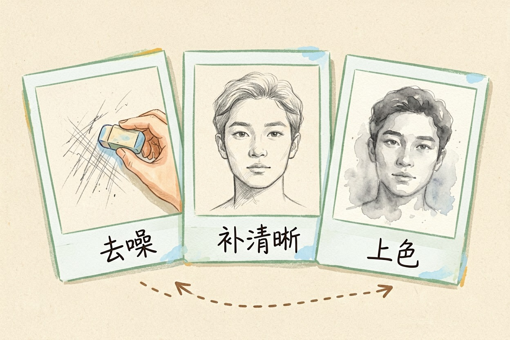
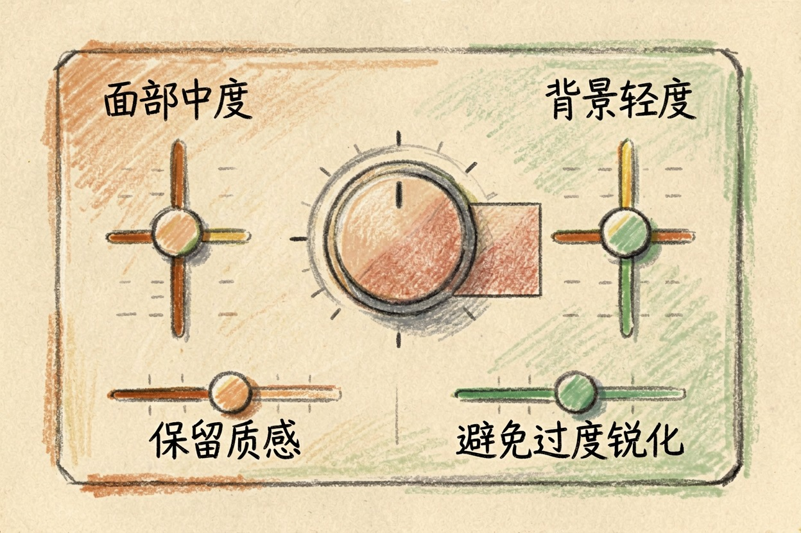
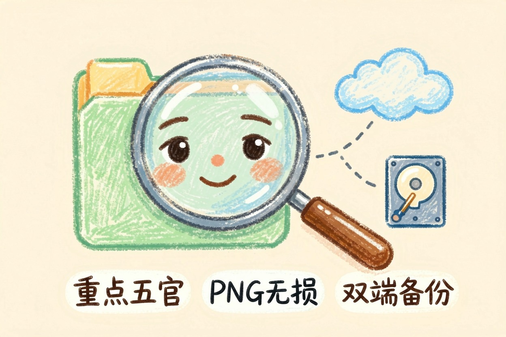

用 AI 修复老照片？清晰度和上色怎么调 — Learntide
翻出泛黄旧照先别急着一键美颜。先把去噪、补清晰、上色这三步的顺序排好。
ai修复老照片：先排好三步顺序

ai修复老照片第一步别急着上色。很多工具一键下去又补清晰又上色，结果颜色糊一脸，细节反而没了。
正确顺序是先修后色。第一步去噪点和划痕，把底子弄干净。第二步补清晰度，把糊掉的五官拉回来。第三步才考虑上色。
底子差的照片先扫描。手机翻拍会有反光和变形，扫描件干净，模型才好发力，成品率高很多。
顺序乱了就返工。先上色再补清晰，颜色会被擦花，等于白做一遍，不如一开始就排好。
严重破损的先拼回。缺角缺块先补形，再谈清晰，否则模型往洞里乱填，越修越怪。
彩照也能修。不是只有黑白才要修，褪色泛黄的彩照同样能拉回，别以为只能处理旧黑白。
调清晰度和降噪的参数

补清晰不是越强越好。强度拉满，皮肤变成塑料，头发糊成一团，老人反而不像自己。
请修复这张老照片，分三步输出：
1 去噪：轻度，保留皮肤纹理，不要磨平
2 补清晰：面部中度，背景轻度，避免锐化噪点
3 上色：仅当原图确为黑白时开启，饱和度保守
输出：修复后的图，并标注每一步用到的强度。降噪要留纹理。脸不能光滑得像假人，保留一点颗粒，才像真人不是雕塑。
背景和脸分开调。脸要清楚，背景轻度即可，背景太清楚会抢主角，主次就乱了。
强度也别一刀切。皱纹多的脸降噪轻一点，光滑的可以重一点，按图调才自然。
上色要克制，别用力过猛
上色最怕饱和度拉满。大红大绿往脸上一抹，怀旧感全无，还显得廉价。
颜色拿不准就保守。先低饱和试一张，看着顺眼再微调，别一上来就鲜亮。
有些照片本就不该上色。本身有褪色但还能看，强加上色反而假，不如保留旧色温更有味道。
肤色别调成统一橘。老人肤色偏黄偏暗才真实，通通调成网红橘，亲人都认不出。
上色前先问长辈。老人家对当年衣服颜色有记忆，问一句比瞎猜准，也更有温度。
人脸修复与最终导出

人脸是重点。眼睛和嘴角清楚了，整张照片就活了，这部分强度可以比背景高一点。
多人合照逐个看。模型常顾中间丢两边，边上的长辈容易糊，挨个检查才稳。
导出存一份原图备份。修复图另存，原片永远留着，哪天想重做还有底。
文件格式选无损。存 png 别压成高压 jpg，反复存会掉细节，原质才保得住。
修复完先备份再分享
修好先备份再发出去。云端和硬盘各留一份，原片丢了就再也回不来。
分享前问家人。有些旧照涉及长辈隐私，发出去前打个招呼，免得惹不快。
别让模型替你定上色深浅。也别一键套最高强度的美颜，把老人修成塑料人最可惜。工具从工具导航里挑一个顺手的就行，ai修复老照片真正有价值的，是让家人重新看清那张熟悉的脸。
本文信息核对于 2026-08-08。AI 产品的价格、免费额度与功能变动频繁，实际以各工具官网当前说明为准。